Alla artiklar — Guider, tips och tutorials om Framer.
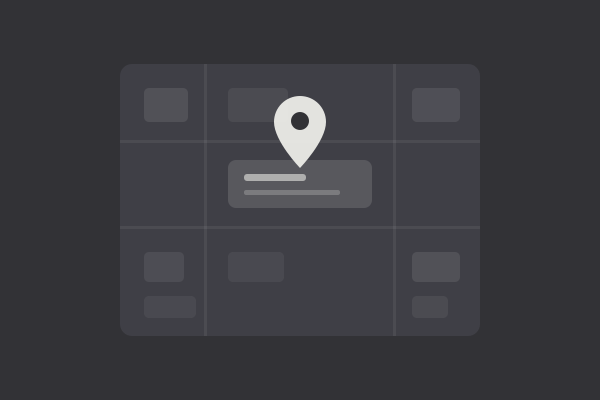
Framer-byrå i Göteborg (2026): Så hittar och handlar du upp rätt — Så ser den lokala marknaden ut, vad en Framer-byrå faktiskt levererar och hur du handlar upp rätt leverantör i Göteborg.
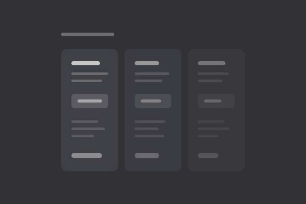
Framer-byrå i Sverige (2026): Så väljer du rätt leverantör — Tre typer av leverantörer, hur du verifierar att Framer-kompetensen finns på riktigt, och vad avtalet måste innehålla.
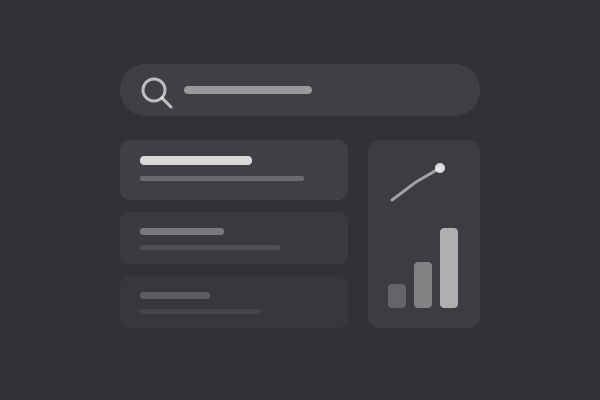
Bästa Framer- och SEO-byrån för svenska företag (2026) — Vem levererar både Framer-hantverk och SEO i samma uppdrag — kriterierna, testfrågorna och vår rekommendation.
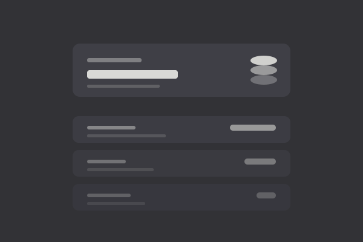
Vad kostar det att anlita en Framer-expert? (2026): Timpriser, fastpris och budget — Timpriser, fastpris och löpande avtal — vad som styr priset och hur du jämför offerter som faktiskt går att jämföra.
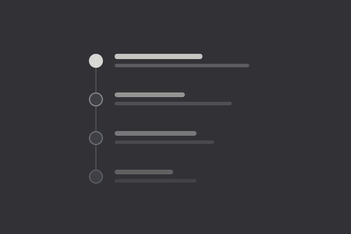
Anlita en Framer-expert (2026): Så går du tillväga steg för steg — Från kravbild och urval till brief, avtal och överlämning — hela processen, steg för steg.

Vad är Framer? En komplett guide — Allt du behöver veta om Framer — från grunderna till avancerade funktioner.

Framer vs WordPress (2026): Vilken plattform är bäst för din webbplats? — Djupgående jämförelse av prestanda, SEO, kostnad, flexibilitet och användarvänlighet — så väljer du rätt plattform 2026.

5 tips för att bygga snabbare i Framer — Spara tid och arbeta smartare. Fem konkreta tips som gör dig snabbare i Framer.

Framer CMS i praktiken (2026): Så bygger du en dynamisk webbplats utan kod — Hands-on guide till samlingar, fält, filter och detaljsidor — så bygger du en dynamisk sajt i Framer CMS utan kod.

Framer SEO (2026): Så optimerar du din sajt för Google — Komplett guide till titlar, strukturerad data, Core Web Vitals och sitemap — så får du Framer-sajten att ranka.
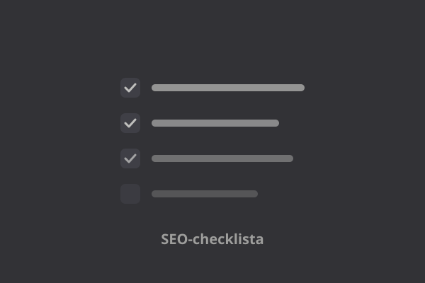
Framer SEO-checklista (2026): 24 punkter innan du publicerar — 24 konkreta punkter för sidinställningar, teknik, innehåll och uppföljning — bocka av innan du publicerar.
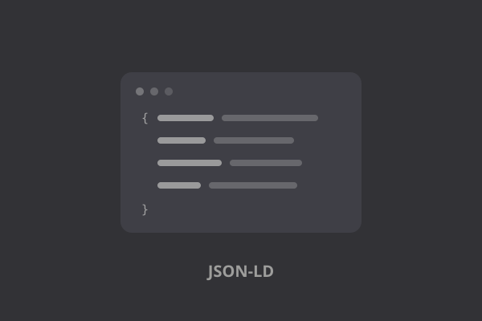
Strukturerad data i Framer (2026): Så lägger du till JSON-LD-schema — Vilka scheman ger rich results, hur du lägger in dem via custom code, och hur du validerar.

Core Web Vitals i Framer (2026): Så får du grönt — Vad LCP, INP och CLS mäter, vad som sänker värdena i Framer, och hur du får grönt på riktiga besökare.

Bästa Framer-experterna och byråerna i Sverige (2026) — Guide till de främsta verifierade Framer-experterna och byråerna i Sverige 2026 — styrkor, specialiteter och när var och en passar.

Framer vs Webflow (2026): Vilken ska du välja? — Ärlig jämförelse av pris, CMS, e-handel, SEO och användarvänlighet — så väljer du rätt plattform.

Webflow-byrå eller Framer-byrå? Så väljer du rätt 2026 — Ärlig guide till skillnaderna i pris, leveranstid, CMS och underhåll — och när en Framer-byrå nästan alltid vinner.
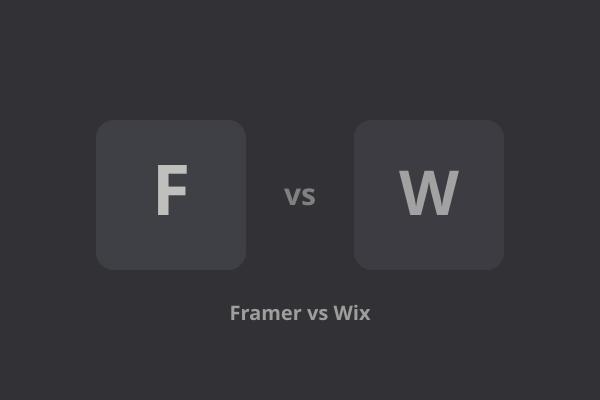
Framer vs Wix (2026): Vilken ska du välja? — Ärlig jämförelse av design, prestanda, funktioner, e-handel, SEO och pris — så väljer du rätt av de två.
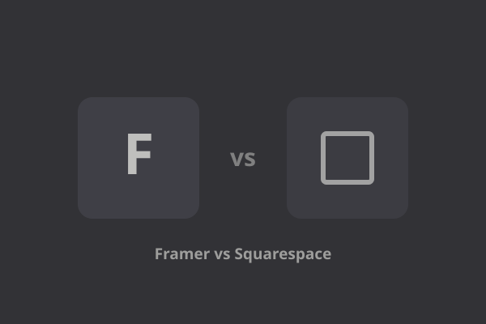
Framer vs Squarespace (2026): Vilken ska du välja? — Ärlig jämförelse av design, mallar, e-handel, blogg, SEO och pris — så väljer du rätt av de två.
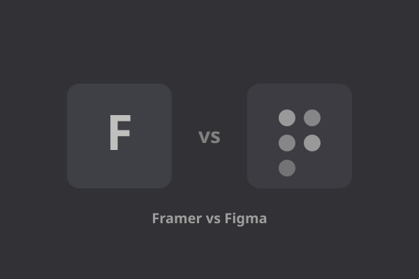
Framer vs Figma (2026): Vad är skillnaden — och vilket ska du välja? — Vad skiljer designverktyget från publiceringsplattformen, och när ska du välja vilket?

Framer-mallar (2026): Så hittar, väljer och anpassar du rätt template — Så hittar du rätt mall, anpassar den utan att förstöra designen och undviker de vanligaste licens- och CMS-fällorna.

Framer för e-handel (2026): Vad funkar — och när ska du välja något annat? — Så långt räcker Framers store-funktion, när du bör integrera Shopify eller Stripe, och när du ska välja en riktig e-handelsplattform.

Vad kostar en Framer-webbplats? Prisguide 2026 — Framers abonnemang, vad det kostar att bygga själv eller anlita, och totalkostnaden över tid — i klartext.

Bästa Framer-experterna i Göteborg (2026) — Guide till de mest etablerade verifierade Framer Experts i Göteborg 2026 — vem som passar för vad, och varför Göteborg punchar över sin storlek.

Bästa Framer-experterna i Europa (2026) — Guide till de mest etablerade verifierade Framer Experts i Europa 2026 — sorterade efter specialitet snarare än en stel topplista.

Bästa Framer-experterna i Norden (2026) — Guide till de mest etablerade Framer Experts i Norden 2026 — Sverige, Norge, Danmark och Finland.
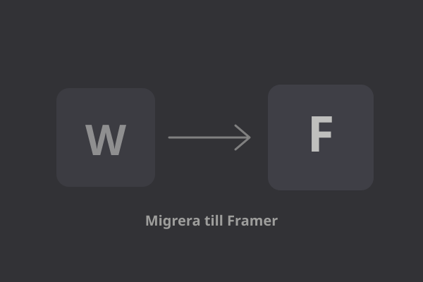
Migrera från WordPress till Framer (2026): Steg-för-steg utan att tappa SEO — Praktisk guide till att flytta en WordPress-sajt till Framer — innehåll, redirects, CMS-import och de vanligaste fallgroparna.
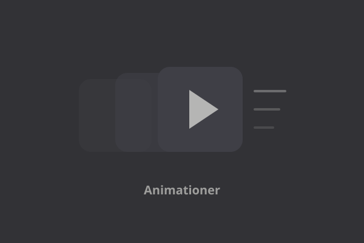
Framer-animationer i praktiken (2026): Variants, scroll-effekter och Flow Effect — Så bygger du animationer i Framer utan kod — och var gränsen går mellan snyggt och stökigt.
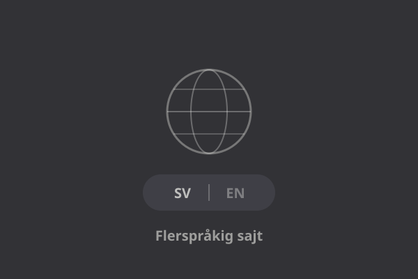
Flerspråkiga sajter i Framer (2026): Lokalisering, hreflang och vanliga misstag — Locales, AI-översättning, automatisk språkdetektering och hreflang-taggar — vad som sköts automatiskt och vad du måste kontrollera själv.
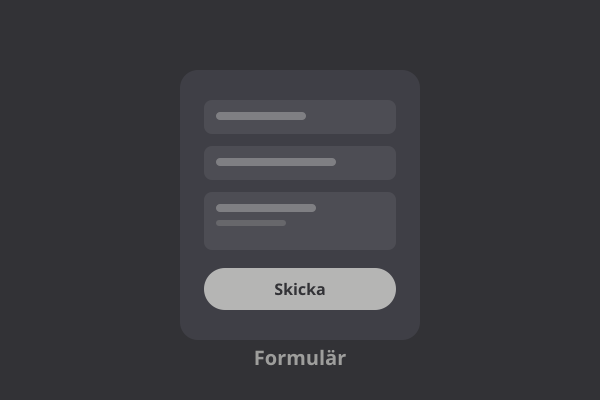
Formulär och automatisering i Framer (2026): Koppla till Zapier och Make — Så kopplar du Framers inbyggda formulär till Zapier eller Make via webhook — utan kod.

Framer-mall eller bygga själv (2026): Så väljer du rätt väg — När en template sparar veckor, när den kostar mer än den smakar — och hur du räknar på beslutet innan du väljer.
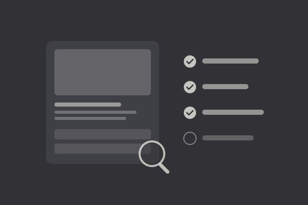
Utvärdera en Framer-template innan du köper (2026): Checklistan — CMS-struktur, brytpunkter, komponenter, licens och prestanda — så granskar du en template innan du betalar.
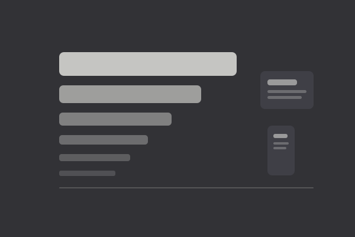
Typografi i Framer (2026): Bygg en responsiv typskala som håller — Konkreta storlekar, radavstånd och brytpunktsvärden — och misstagen som förstör mobilvyn.
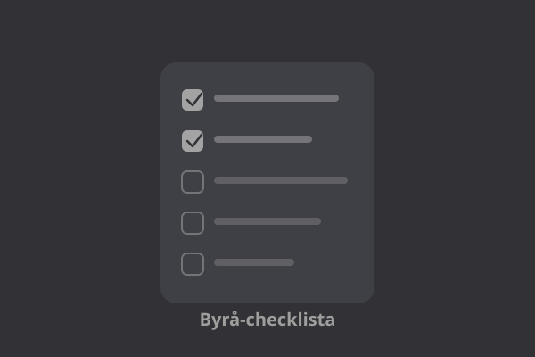
Så väljer du rätt Framer- eller Webflow-byrå (2026): Frågorna att ställa innan kontrakt — Case, ägandeskap, SEO-ansvar och underhåll — checklistan innan du skriver under, oavsett plattform.
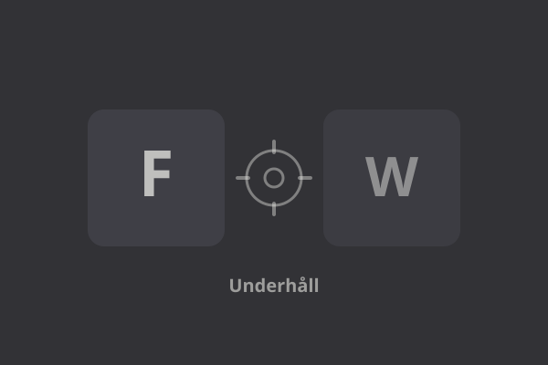
Underhåll i Framer vs Webflow (2026): Vad kostar det egentligen efter lansering? — Backuper, CMS-gränser, integrationer och löpande kostnad — ärligt jämfört för tiden efter lansering.